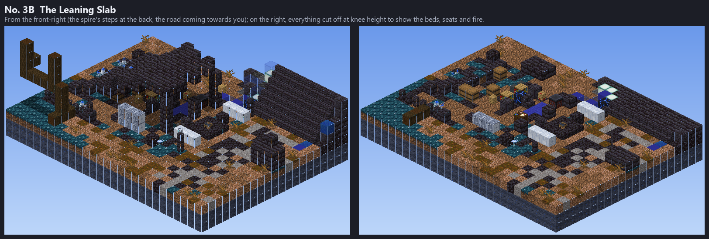
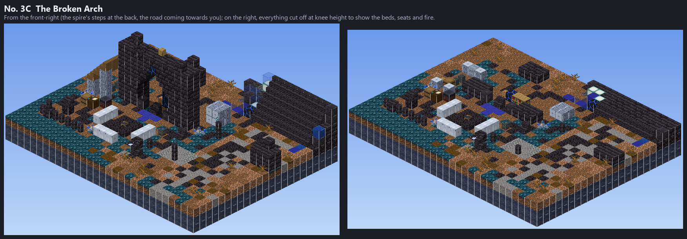
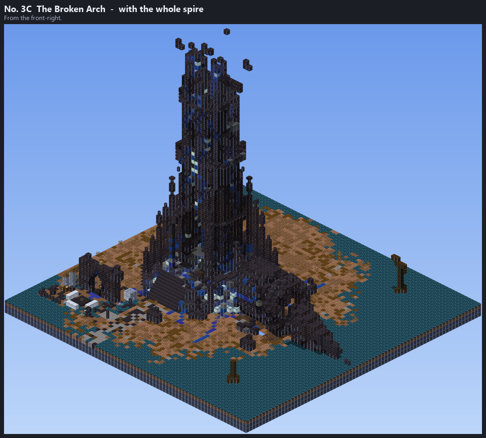
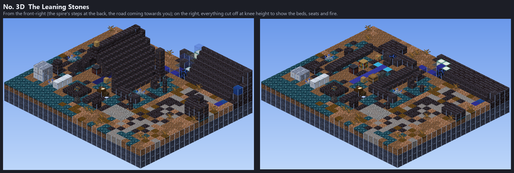
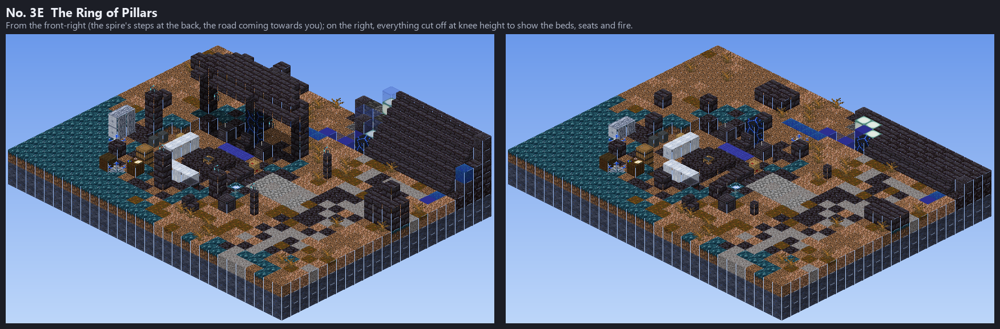
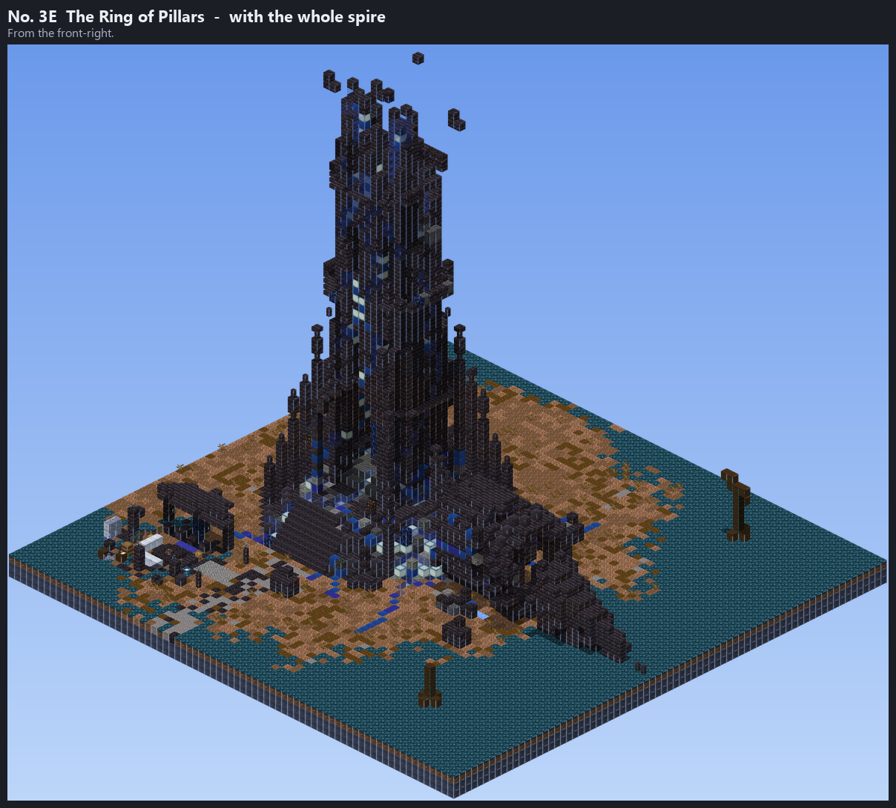

At the foot of the Shattered Spire's front steps (the Dross hub). The Blind Oracle (the master) and the Ragged Seeker (his student) live here. The user picked No. 3 of the three drafts (round 1); these are five versions of it (round 2).
The draft, worked up: a slab of the spire's broken crown on four broken pillars beside the steps, behind a windbreak of fallen masonry, grown over with Silvermoss. The Oracle sits facing the road by a humming shard of a Dross frame, among books and candles, a lectern for his tome; the Seeker sleeps among his crates, his map table, smithing table and grindstone outside. A blue soul fire with benches and a stew pot in front.


A slab of the crown fell tilted beside the steps: its far end lies on the ground grown over with Silvermoss, its near end is propped five high on two pillars (a third broke under it), making a low cave that opens to the road. The Oracle sits under the high end facing out, the frame shard and his books behind him; the Seeker's bed and crates are crammed under the low end. The blue fire burns at the cave's mouth.

A piece of the spire's gate arch fell whole and stands beside the steps facing the way in, a blue banner on its top. The Oracle sits in its opening under a keystone that is a shard of a Dross frame, a soul lantern hanging from it, his books and lectern behind him; the Seeker has built a lean-to of silverwood against its west pier for his bed and crates. The blue fire burns before the arch.


Two slabs of the crown fell against each other and stand like a tent of stone beside the steps, its back shut with masonry, its front open to the south, a blue banner on its ridge. The Oracle sits at its back by the frame shard between his candles, a blue runner down to the door; the Seeker sleeps along its east side, his books and smithing table along the west. One pillar still stands, another lies toppled; the blue fire burns before the open end.

A ring of the spire's broken pillars round a hollow worn a block down into the ground, the back of the ring roofed by a slab of the crown on its three tallest pillars, steps down into it from the road, soul lanterns on the broken ones. The blue fire burns in the middle; the Oracle sits under the roof facing it, the frame shard and his banner behind him; the Seeker sleeps on the west side among his crates.

